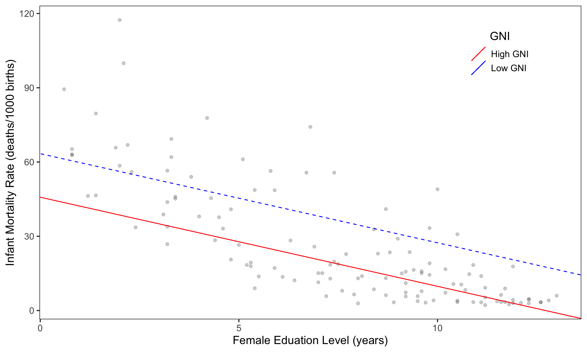
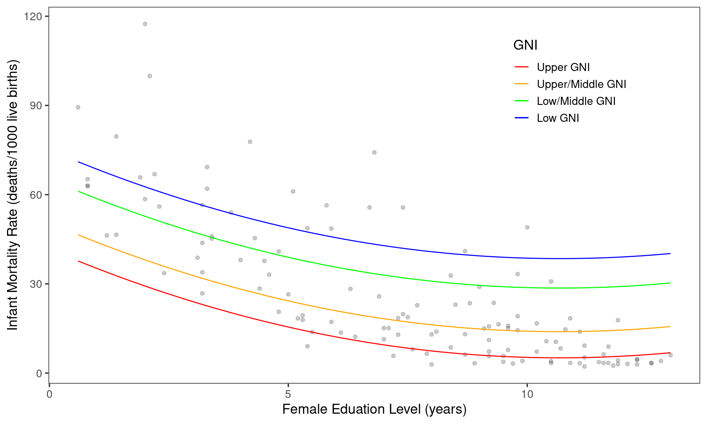

Polynomial Effects
Variation in Infant Mortality Rates Across Countries
Linear Effect
To better understand the causes of variation in infant mortality rates across countries, the number of infant deaths before the age of one per 1000 live births (infant mortality rate) was linearly regressed on the average number of years of formal education for a woman (female education level) for 124 countries (\(\mathrm{r}^2 = 0.606\)). We controlled for GNI in this regression by including a dummy variable that assigned a 1 to countries with a high-gross national income (GNI) and a 0 to those with a low GNI. The figure and equation below show the model developed from this regression:
\[ \begin{split} \hat{\mathrm{Infant~Mortality~Rate}_i} &= 63.37- 3.6(\mathrm{Female~Education~Level}_i) - 17.58(\mathrm{GNI}_i) \end{split} \]
These results suggest that a one-unit change in female education level (or an additional year of formal education) is associated with a decreased infant mortality rate by 3.60 (or 3.60 less infant deaths before their first birthday, per 1000 live births). It also suggests that countries with a high GNI have a lower infant mortality rate by 17.58.
Quadratic Effect
An investigation of the standardized residuals for this linear model suggest that a linear model may not accurately represent the data and that a model including a quadratic effect of female education may be more appropriate. This new model regressed, controlling for each GNI level. This model was found to better represent the data (\(\mathrm{r}^2 = 0.711\)) than the linear model (\(\mathrm{r}^2 = 0.606\)). Again, the equation and a figure for this model are provided below.

\[ \begin{align} \hat{\mathrm{Infant~Mortality~Rate}_i} &= 75.02 - 6.84(\mathrm{Female~Education~Level}_i) + 0.32(\mathrm{Female~Education~Level}_i^2) \nonumber \\ &\quad - 33.37(\mathrm{Upper~GNI}_i) - 24.57(\mathrm{Upper/Middle~GNI}_i) - 9.91(\mathrm{Low/Middle~GNI}_i) \end{align} \]
According to this model, female education has an effect on infant mortality rate, controlling for GNI level. In this model, the effect of female education on infant mortality decreases as female education level increases. Another way of saying this is that the negative effect of female education on infant mortality rate is greater at lower levels of education than it is at higher levels (i.e., there is a greater effect at education level 1 than at education level 12). This can be interpreted to mean that the initial years of female education are more critical to decreasing infant mortality than later years. Education still has an effect in these later stages but its effect diminishes.
Countries with high levels of GNI are associated with a lower infant mortality rate, similar to findings from the linear model.